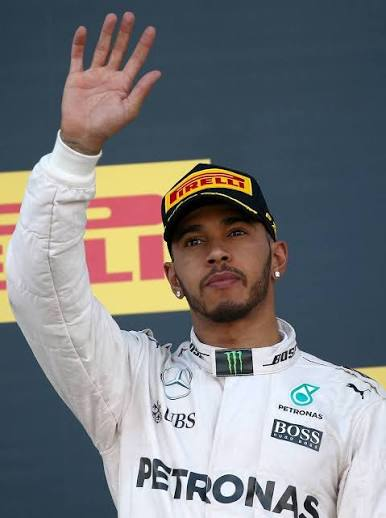
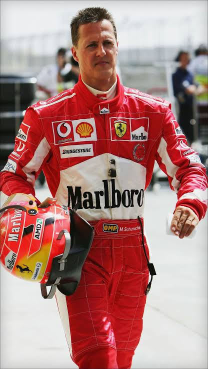
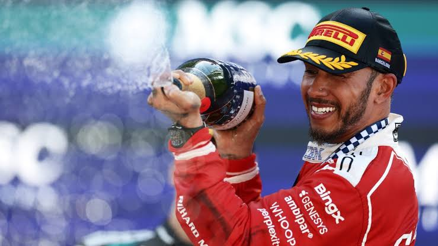
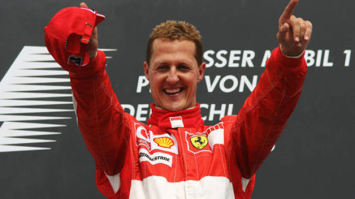

Семикратный чемпион мира Формулы 1. Дебютировал в 2007 году в McLaren и сразу боролся за титул, а первое чемпионство завоевал в 2008 году. С 2013 года выступал за Mercedes, где выиграл шесть титулов.Хэмилтон считается одним из самых результативных гонщиков в истории чемпионата.
 Четырёхкратный чемпион мира. В 2015 году дебютировал в Toro Rosso в 17 лет и
стал самым молодым гонщиком в истории Формулы 1. Титулы 2021–2024 годов завоевал
в составе Red Bull.
Четырёхкратный чемпион мира. В 2015 году дебютировал в Toro Rosso в 17 лет и
стал самым молодым гонщиком в истории Формулы 1. Титулы 2021–2024 годов завоевал
в составе Red Bull.

Семикратный чемпион мира. Два титула (1994 и 1995) выиграл в Benetton, ещё пять (2000–2004) в Ferrari. Многие годы его достижения считались недосягаемыми.